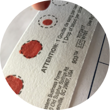

Follow the clues. Provide the answer.
This website provides information on how you can screen your patient for Fabry disease.
Are you a cardiologist?Are you a nephrologist?

Recognize signs of Fabry disease


Order a complimentary dried blood spot (DBS) test
Send to Dynacare to analyze
Diagnostic delays are common due to the heterogeneous nature of the disease and the manifestation of many non-specific symptoms.2
Undiagnosed or unmanaged Fabry disease reduces life expectancy by 15 years in women and 20 years in men according to natural history data.3,4
Although symptoms can be difficult to recognize, diagnosis can be simple.
You can make a difference! Order a DBS kit so that you can test for Fabry disease when you see or suspect symptoms and/or clinical manifestations.
Cornea verticillata is one of the most common and early signs of Fabry disease Another common sign is vessel tortuosity on the eyelid

The most visible early clinical feature of Fabry disease
Fabry disease is caused by a mutation in a gene called GLA, which encodes an enzyme called alpha-galactosidase A (α-GAL A). Lack of α-GAL A can result in a build-up of fatty substances in cells, leading to the signs and symptoms of Fabry disease. This condition is inherited in an X-linked pattern. 5,6
The diagram below shows the steps for diagnosing Fabry disease. Both the α-GAL A enzyme assay and the DNA sequencing can be performed on the same DBS sample.5
* Results will be delivered within approximately 3 weeks.
There are three simple steps to DBS testing.
Step 1: Obtain patient consent, and complete requisition form and patient history survey
Step 2: Obtain blood spot sample
Step 3: Mail the sample
If you want guidance or support, here’s a handy guide on where you can turn:
| I have not received the results after 3 weeks. | I don’t know who I should send my suspected Fabry patient to. |
| I don’t feel comfortable reading the results. | I would like Fabry disease resources for my patients. |
| I would like to speak with a geneticist about the results. | I’d rather send my patient to a lab to collect the DBS sample. |
| Contact Dynacare | Contact your Sanofi Genzyme representative |
Sanofi Genzyme and Dynacare have partnered to increase access to DBS testing of enzyme analysis and gene sequencing for Fabry disease.
For more information or to request a complimentary testing kit, please email FabryAwareness@sanofi.com or contact your territory representative.
Get in touch